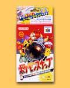

|
|  |
1999年3月21日発売
6,800円(税別)
ジャンル：カメラアクション
 1995,1996,1998 Nintendo / Creatures / GAME FREAK 1995,1996,1998 Nintendo / Creatures / GAME FREAK
1999 Nintendo / HAL Laboratory,Inc.
|
 野生のポケモンが住む「ポケモンアイランド」。そこでは、ポケモンたちが自由にのびのびと遊んでいた。プレイヤーはこの「ポケモンアイランド」で、さまざまな姿を見せるポケモンたちをカメラで写す。「どうぐ」を使えば、怒ったり喜んだりするポケモンたちを撮影することができるぞ。撮った写真はオーキド博士に採点してもらおう。楽しい写真をたくさん撮って、自分だけのオリジナルポケモンアルバムを作成しよう。 野生のポケモンが住む「ポケモンアイランド」。そこでは、ポケモンたちが自由にのびのびと遊んでいた。プレイヤーはこの「ポケモンアイランド」で、さまざまな姿を見せるポケモンたちをカメラで写す。「どうぐ」を使えば、怒ったり喜んだりするポケモンたちを撮影することができるぞ。撮った写真はオーキド博士に採点してもらおう。楽しい写真をたくさん撮って、自分だけのオリジナルポケモンアルバムを作成しよう。
|
|
|